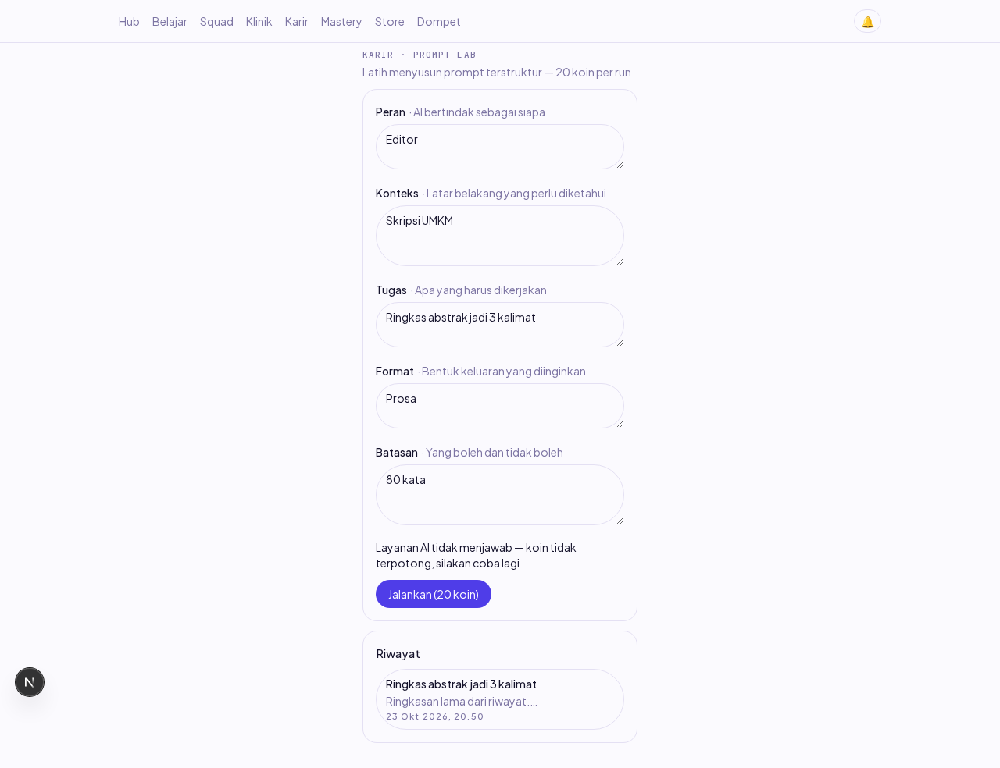
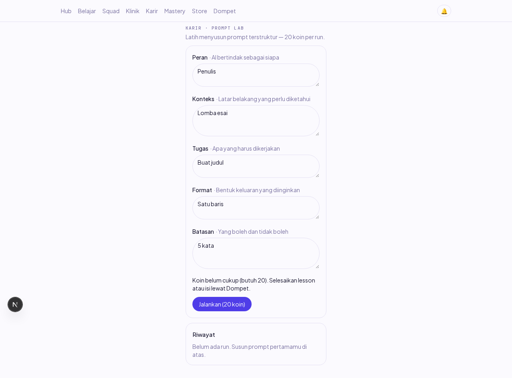
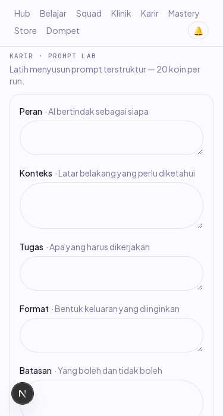

Laporan verifikasi bagian Node dan web item PL-01 (Dev B). Dikerjakan 23 Okt 2026 (sesi susulan minggu 19–23 Okt); sisi layanan AI selesai 18 Okt (PR #239, merged).
POST /career/prompt-lab/run (⚡) berdiri: validasi 5 bagian, kuota PL-4, lalu hold → settle | release sesuai keputusan #245 (aturan keras 4 — bukan debit langsung seperti tulisan lama PRD PL-3; penyuntingan PRD dicatat di PR). Layar /career menggantikan stub: form 5 bagian, biaya dari pricing nyata, riwayat berpasangan (PL-6), dan jalankan-ulang dari riwayat.
Kunci LLM lokal kosong → jalur sukses dengan LLM nyata tidak bisa dijalankan di browser. Yang dibuktikan:
| # | Skenario | Harapan | Hasil | Cara verifikasi |
|---|---|---|---|---|
| 1 | AC-PL-1: run sukses (klien AI palsu) | 20 koin terpotong (hold→settle), output tersimpan, prompt_runs +1 | LULUS | integrasi DB nyata |
| 2 | AC-PL-2: LLM gagal | release (koin kembali), baris run dihapus, galat bersih | LULUS | integrasi + browser (AI nyata 503) |
| 3 | AC-PL-2: lebih dari batas waktu | diperlakukan gagal, koin utuh | LULUS | integrasi (batas 50 ms) |
| 4 | PL-4: run ke-11 hari yang sama | 429 DAILY_AI_QUOTA_EXCEEDED | LULUS | integrasi |
| 5 | PL-4: kuota GABUNGAN (cv_documents ikut) | 429 | LULUS | integrasi |
| 6 | PL-4: PERCOBAAN GAGAL ikut dihitung (audit T2) | 10× gagal → ke-11 ditolak (hitungan dari ledger hold, bukan baris run) | LULUS | integrasi |
| 7 | PL-4: tengah malam lokal tak bolong (audit T1) | pengguna zona +14 tetap terhitung (sisi tanggal disamakan, pola integrations-health) | LULUS | integrasi (Pacific/Kiritimati) |
| 8 | ⚡ replay kunci sama | run sama dikembalikan, LLM tak dipanggil ulang, sekali potong | LULUS | integrasi |
| 9 | saldo kurang | 402 INSUFFICIENT_COINS, tanpa baris run | LULUS | integrasi + browser (pesan bisa dipahami) |
| 10 | Browser: biaya + riwayat + jalankan-ulang | 20 koin dari pricing nyata; riwayat tampil; klik mengisi form | LULUS | Screenshot 01 |
| 11 | Browser: 375px + console | tanpa scroll horizontal; bersih | LULUS | Screenshot 03 |

01 — Form lengkap; run → layanan AI nyata menolak (kunci kosong): pesan menjelaskan koin aman, saldo 200 utuh (ledger hold+release dibuktikan di DB).

02 — Saldo 0: INSUFFICIENT_COINS dengan pesan yang bisa dipahami, bukan galat teknis.

03 — 375px tanpa scroll horizontal.
| Temuan | Severity | Penanganan |
|---|---|---|
| T1: batas kuota memakai tengah malam zona SESI (UTC) — jendela 00:00–07:00 WIB bolong | Medium | DIPASANG + test regresi zona +14 |
| T2: cek kuota balapan (TOCTOU) + percobaan gagal tak dihitung | Medium | DIPASANG: kuota di dalam TRX setelah FOR UPDATE baris users; hitungan dari ledger hold (append-only) + test |
| T3: replay kunci paralel → 503 menyesatkan + biaya vendor ganda | Medium | DIPASANG: hold balik ref asing → berhenti sebelum LLM (409 KEY_CONFLICT); Error internal tak lagi menyamar PROVIDER_UNAVAILABLE |
| T4: teks mentah vendor masuk note ledger (tampil di riwayat dompet) | Low | DIPASANG: alasan generik 'run gagal' |
| Perintah | Hasil |
|---|---|
pnpm --filter @strive/api test:integration prompt-lab | 10/10 |
pnpm --filter @strive/web test | 121/121 (7 baru: mesin lab) |
pnpm lint && pnpm typecheck | hijau |